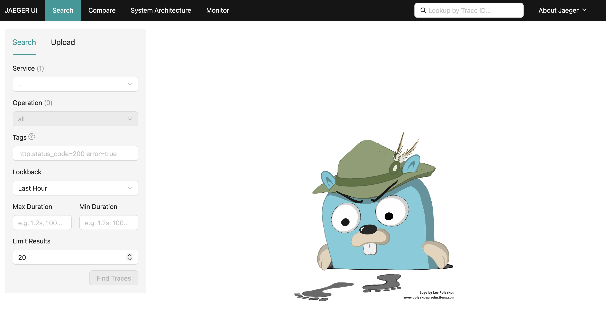
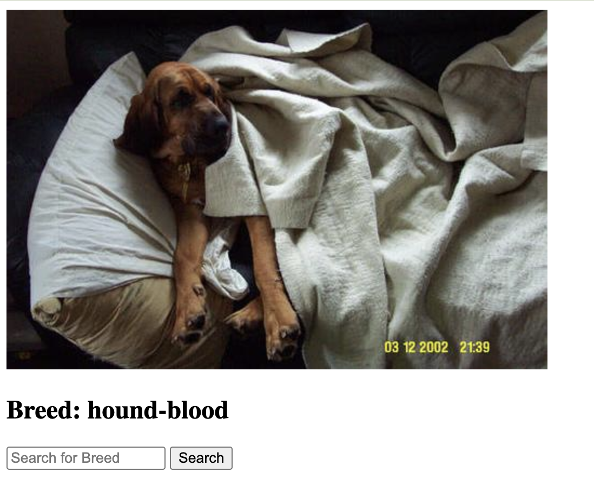
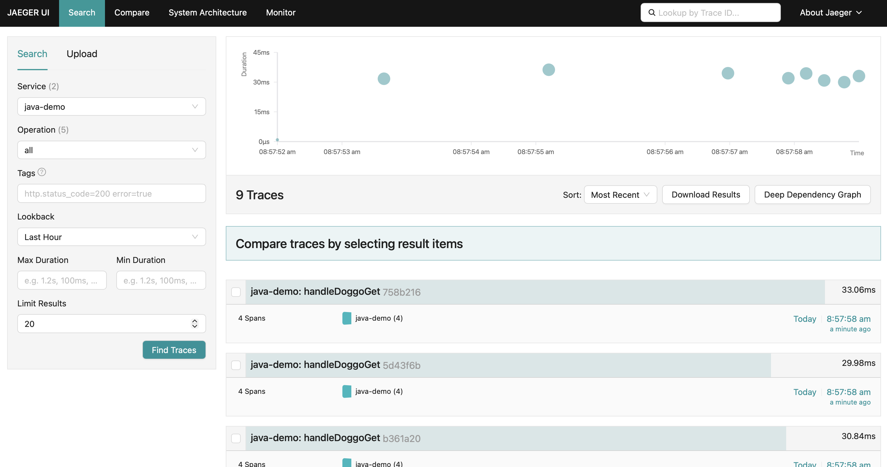
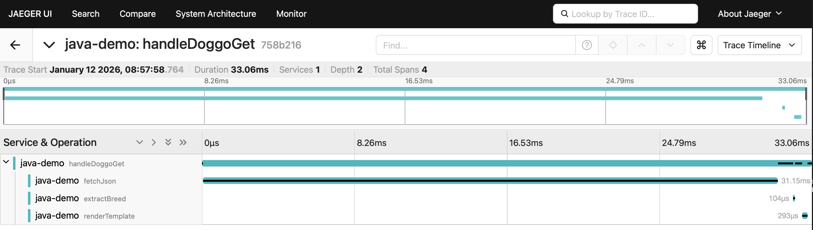

Programmatic - Rancher k3s prerequisites
This path runs Jaeger on a local Rancher Desktop k3s cluster instead of under Podman. You still need
Java 21 and
Maven 3.8+ to build and run the application on
your host, plus Rancher Desktop with the
Kubernetes (k3s) engine enabled, and
kubectl on your PATH.
Programmatic - Start Rancher Desktop
This lab assumes Rancher Desktop is installed but not yet running. Launch it now:
$ rdctl start
- In Preferences → Kubernetes, confirm "Enable Kubernetes" is checked (k3s)
- In Preferences → Container Engine, confirm "containerd" is selected
- Wait for the status indicator in the bottom left to turn green and show "Kubernetes is running" - this can take a minute or two on first start
Programmatic - Verifying the cluster
Check that
kubectl is pointed at Rancher Desktop and the node is ready:
$ kubectl config current-context
rancher-desktop
$ kubectl get nodes
NAME STATUS ROLES AGE VERSION
lima-rancher-desktop Ready control-plane,master 2d v1.36.2+k3s1
Now that you have the tooling, let's get started...
Programmatic - Why not just use the agent?
While the Java Agent is convenient, programmatic instrumentation gives you:
- More control over what gets instrumented
- Ability to create custom spans for business logic
- Better IDE support and compile-time checking
- Works in environments where agents can't be attached
- Smaller overhead for targeted instrumentation
Programmatic - Add Maven dependencies
Add the OpenTelemetry dependencies to your
pom.xml. (Note that this
has been provided in the OpenTelemetry Java Tracing Demo project
pom-programatic-instrumentation.xml file):
<!-- OpenTelemetry API -->
<dependency>
<groupId>io.opentelemetry</groupId>
<artifactId>opentelemetry-api</artifactId>
<version>1.65.0</version>
</dependency>
<!-- OpenTelemetry SDK -->
<dependency>
<groupId>io.opentelemetry</groupId>
<artifactId>opentelemetry-sdk</artifactId>
<version>1.65.0</version>
</dependency>
<!-- Console Exporter for debugging -->
<dependency>
<groupId>io.opentelemetry</groupId>
<artifactId>opentelemetry-exporter-logging</artifactId>
<version>1.65.0</version>
</dependency>
Programmatic - Configure SDK
To create, manage and export spans with OpenTelemetry there are 3 components to configure:
- Tracer Provider - factory that returns a tracer for creating and managing spans
- Span Processor - hooks into span lifecycle, options to send spans immediately or in batches
- Span Exporter - responsible for sending spans to the configured destination
Programmatic - Initialize OpenTelemetry
Add a method to initialize the OpenTelemetry SDK (available for uncommenting in
the
AppProgramaticInstrumentation.java file):
import io.opentelemetry.api.OpenTelemetry;
import io.opentelemetry.api.trace.Tracer;
import io.opentelemetry.sdk.OpenTelemetrySdk;
import io.opentelemetry.sdk.resources.Resource;
import io.opentelemetry.sdk.trace.SdkTracerProvider;
import io.opentelemetry.sdk.trace.export.SimpleSpanProcessor;
import io.opentelemetry.exporter.logging.LoggingSpanExporter;
import io.opentelemetry.semconv.ServiceAttributes;
public class AppProgramaticInstrumentation {
private static OpenTelemetry initOpenTelemetry() {
Resource resource = Resource.getDefault()
.merge(Resource.create(Attributes.of(
ServiceAttributes.SERVICE_NAME, "java-demo")));
SdkTracerProvider tracerProvider = SdkTracerProvider.builder()
.setResource(resource)
.addSpanProcessor(SimpleSpanProcessor.create(
LoggingSpanExporter.create()))
.build();
return OpenTelemetrySdk.builder()
.setTracerProvider(tracerProvider)
.buildAndRegisterGlobal();
}
}
Programmatic - Get a Tracer
Initialize OpenTelemetry in your main method and get a tracer (available for uncommenting in the
AppProgramaticInstrumentation.java file):
public class AppProgramaticInstrumentation {
private static final OpenTelemetry openTelemetry = initOpenTelemetry();
private static final Tracer tracer = openTelemetry
.getTracer("io.chronosphere.AppProgramaticInstrumentation", "1.0.0");
public static void main(String[] args) {
Javalin app = Javalin.create();
app.get("/", AppProgramaticInstrumentation::handleIndex);
app.get("/rolldice", AppProgramaticInstrumentation::handleRollDice);
app.get("/doggo", AppProgramaticInstrumentation::handleDoggoGet);
app.post("/doggo", AppProgramaticInstrumentation::handleDoggoPost);
app.start(PORT);
}
}
Programmatic - Instrument a handler
Create a span to collect tracing data for the index page handler (available for uncommenting in the
AppProgramaticInstrumentation.java file):
import io.opentelemetry.api.trace.Span;
import io.opentelemetry.api.trace.SpanKind;
import io.opentelemetry.context.Scope;
import io.javalin.http.Context;
private static void handleIndex(Context ctx) {
Span span = tracer.spanBuilder("handleIndex")
.setSpanKind(SpanKind.SERVER)
.startSpan();
try (Scope scope = span.makeCurrent()) {
int hits = HITS.incrementAndGet();
span.setAttribute("app.hits", hits);
ctx.contentType("text/plain");
ctx.result("This webpage has been viewed " + hits + " times");
} finally {
span.end();
}
}
Programmatic - Verify tracing instrumentation
Build and run the instrumented application using the new pom file:
$ mvn clean install -f pom-programatic-instrumentation.xml
$ java -jar target/java-programatic-instrumentation-demo-1.0-SNAPSHOT-with-dependencies.jar
Programmatic - Verify instrumentation
Open a browser and make a request to the index page at
http://localhost:9999 and confirm spans
are printed to the console as follows:
...
Jan 08, 2026 2:51:08 PM io.opentelemetry.exporter.logging.LoggingSpanExporter export
INFO: 'handleIndex' : 178e16841449b2bef8a03f7c4351df33 c6afa64b08f623b2 SERVER
[tracer: io.chronosphere.AppProgramaticInstrumentation:1.0.0]
AttributesMap{
data={
app.hits=2
},
capacity=128,
totalAddedValues=1
}
...
Programmatic - Stop the application
Press CTRL-C to stop the application. Let's add Jaeger for visualization!
Programmatic - Adding Jaeger
Scrolling through spans in the console is overwhelming. Let's add Jaeger for visualizations!
The
Key features:
The
OtlpGrpcSpanExporter is part of the OpenTelemetry Java SDK and sends
finished spans to any OTLP-compatible backend using the gRPC protocol.Key features:
- Uses efficient gRPC binary protocol for low overhead
- Supports configurable endpoint, headers, and timeouts
- Works with Jaeger, which natively supports OTLP on port 4317
Programmatic - Add OTLP exporter dependency
Add the OTLP exporter to your
pom.xml. (Note that this
has been provided in the OpenTelemetry Java Tracing Demo project
pom-programatic-instrumentation.xml file):
<!-- OTLP gRPC Exporter -->
<dependency>
<groupId>io.opentelemetry</groupId>
<artifactId>opentelemetry-exporter-otlp</artifactId>
<version>1.65.0</version>
</dependency>
Programmatic - Configure OTLP exporter
Update the initialization to use the OTLP exporter (available for uncommenting in the
AppProgramaticInstrumentation.java file):
import io.opentelemetry.exporter.otlp.trace.OtlpGrpcSpanExporter;
private static OpenTelemetry initOpenTelemetry() {
Resource resource = Resource.getDefault()
.merge(Resource.create(Attributes.of(
ServiceAttributes.SERVICE_NAME, "java-demo")));
OtlpGrpcSpanExporter otlpExporter = OtlpGrpcSpanExporter.builder()
.setEndpoint("http://localhost:4317")
.build();
SdkTracerProvider tracerProvider = SdkTracerProvider.builder()
.setResource(resource)
.addSpanProcessor(SimpleSpanProcessor.create(otlpExporter))
.build();
return OpenTelemetrySdk.builder()
.setTracerProvider(tracerProvider)
.buildAndRegisterGlobal();
}
Note that you need to comment out the
initOpenTelemetry() method in the
AppProgramaticInstrumentation.java file previously used for OpenTelemetry
SDK initialization or the build will fail.
Programmatic - Instrumenting handleDoggoGet
Add nested spans to trace the doggo handler (available for uncommenting in the
AppProgramaticInstrumentation.java file), but note you have to
comment out the existing try block as stated in the comments:
Span parentSpan = tracer.spanBuilder("handleDoggoGet")
.setSpanKind(SpanKind.SERVER)
.startSpan();
try (Scope parentScope = parentSpan.makeCurrent()) {
String apiUrl = "https://dog.ceo/api/breeds/image/random";
parentSpan.setAttribute("http.url", apiUrl);
// Child span for API call
Span fetchSpan = tracer.spanBuilder("fetchJson")
.setSpanKind(SpanKind.CLIENT).startSpan();
try (Scope fetchScope = fetchSpan.makeCurrent()) {
json = fetchJson(apiUrl);
} finally { fetchSpan.end(); }
// Child span for breed extraction
Span extractSpan = tracer.spanBuilder("extractBreed")
.setSpanKind(SpanKind.INTERNAL).startSpan();
try (Scope extractScope = extractSpan.makeCurrent()) {
breed = extractBreedFromUrl(imageSrc);
} finally { extractSpan.end(); }
// ... render template span and response ...
} catch (Exception e) {
parentSpan.setStatus(StatusCode.ERROR, e.getMessage());
parentSpan.recordException(e);
} finally { parentSpan.end(); }
Programmatic - Start Jaeger on k3s
Jaeger comes from a public registry, so k3s pulls it for you - there is nothing to side-load here and
no
--image-pull-policy=Never. OTLP is enabled by default in Jaeger v1.76, but we set it
explicitly so the intent is visible:
$ kubectl delete pod jaeger --ignore-not-found
$ kubectl run jaeger --image=jaegertracing/all-in-one:1.76.0 \
--port=16686 --env="COLLECTOR_OTLP_ENABLED=true"
pod/jaeger created
$ kubectl wait --for=condition=Ready pod/jaeger --timeout=180s
pod/jaeger condition met
The
kubectl wait matters: without it the next step can fail with "unable to forward port
because pod is not running".
Programmatic - Forward the Jaeger ports
The application runs on your host and exports over OTLP, so it needs to reach the pod. Forward both the collector port and the UI port to your laptop - 4317 so the application can export spans to
localhost:4317 exactly as on the Podman path, and 16686 so you can open the Jaeger UI in a browser:
$ kubectl port-forward pod/jaeger 16686:16686 4317:4317
Forwarding from 127.0.0.1:16686 -> 16686
Forwarding from 127.0.0.1:4317 -> 4317
Leave this running in its own terminal for the rest of the lab.
Programmatic - Verify Jaeger UI
Open browser to http://localhost:16686.
You should see the Jaeger UI with a Gopher detective:

Programmatic - Rebuilding and verifying traces
Rebuild the project using the programmatic instrumentation pom file and run the application
to verify the OTLP exporter is sending traces to Jaeger as shown below:
$ mvn clean install -f pom-programatic-instrumentation.xml
$ java -jar target/java-programatic-instrumentation-demo-1.0-SNAPSHOT-with-dependencies.jar
Programmatic - Generating traces
Open a browser and make several requests to the
/doggo endpoint to generate traces.

Programmatic - Verifying traces in Jaeger
In the Jaeger UI, select
java-demo from the service dropdown,
all from the operation dropdown, and click on
Find Traces button. Confirm that you see traces returned:

Programmatic - Viewing a trace waterfall
Select one of the traces by clicking the span name to see the trace waterfall:

Intermezzo - Production Tip: Using BatchSpanProcessor
In this lab we used
SimpleSpanProcessor which exports spans immediately
for easier debugging. In production, replace it with BatchSpanProcessor
to reduce network overhead by batching spans before export:
import io.opentelemetry.sdk.trace.export.BatchSpanProcessor;
SdkTracerProvider tracerProvider = SdkTracerProvider.builder()
.setResource(resource)
.addSpanProcessor(BatchSpanProcessor.builder(otlpExporter)
.setScheduleDelay(Duration.ofSeconds(5))
.setMaxQueueSize(2048)
.setMaxExportBatchSize(512)
.build())
.build();
Note: This is not demonstrated in this lab. For more details, see the
OpenTelemetry Java Span Processor documentation
.
Intermezzo - Production Tip: Graceful Shutdown
When using
BatchSpanProcessor, spans are queued before export. If your
application shuts down abruptly, pending spans in the queue will be lost. Register a shutdown
hook to flush all pending spans before the application terminates:
public static void main(String[] args) throws IOException {
OpenTelemetrySdk sdk = (OpenTelemetrySdk) initOpenTelemetry();
// Register shutdown hook to flush pending spans
Runtime.getRuntime().addShutdownHook(new Thread(() -> {
sdk.getSdkTracerProvider().shutdown();
}));
// ... rest of main method
}
Note: This is not demonstrated in this lab. For more details, see the
OpenTelemetry Java SDK TracerProvider documentation.
Programmatic - Clean up
The next two labs keep using Jaeger, so leave the pod running if you are carrying on. To tear it down
instead, stop the port-forward with CTRL-C and delete the pod:
$ kubectl delete pod jaeger
Lab completed - Results
We installed and configured the OpenTelemetry SDK programmatically in the demo application and successfully
sent and viewed traces in Jaeger.
Next up is exploring trace data in detail!

Contact - are there any questions?
Eric D. Schabell
Technology Advocate Lead
Contact: @ericschabell {@fosstodon.org) or https://www.schabell.org
Technology Advocate Lead
Contact: @ericschabell {@fosstodon.org) or https://www.schabell.org